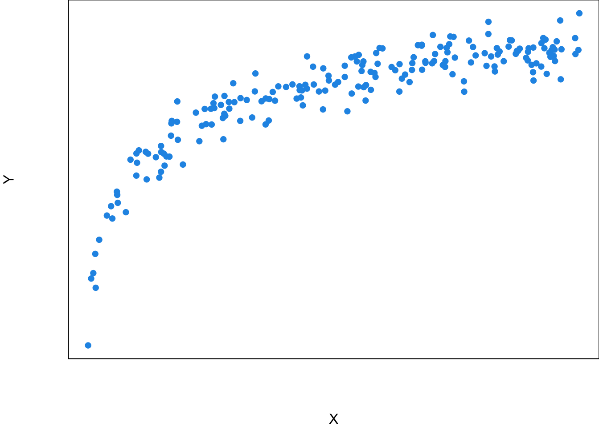
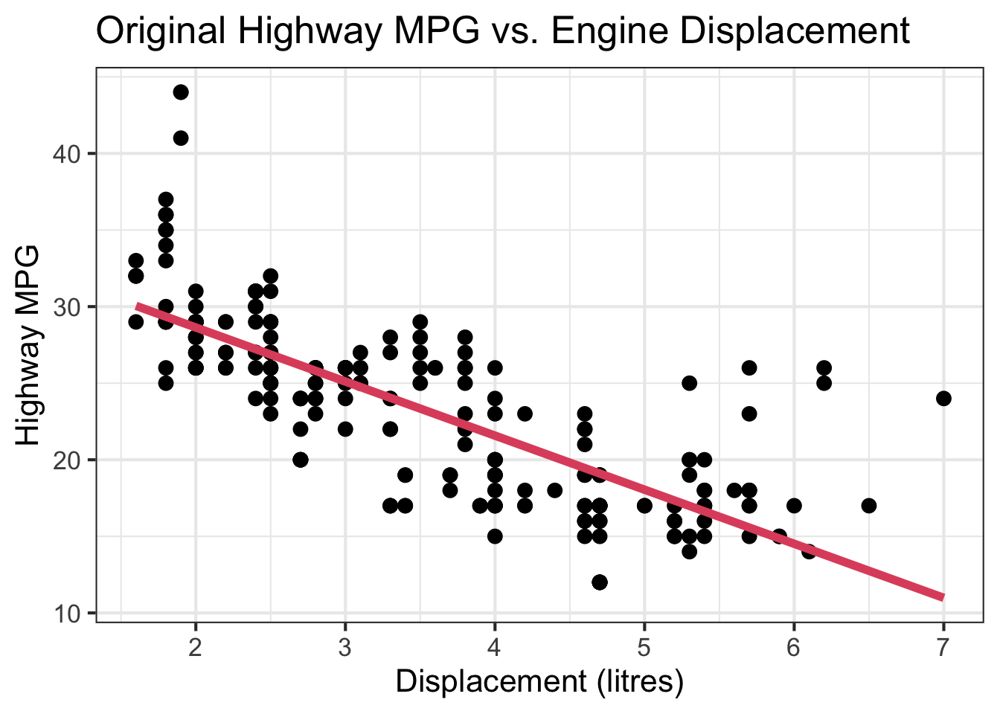

26 Simple Linear Regression
Linear regression is a regression model which is a statistical technique for investigating and modeling the relationships between variables. If your data set only have one variable, or you just want to analyze one single variable in your data, you do not need regression at all. But you’d like to see how one variable affects another, how one changes with the another, or use one variable to predict another variable, regression may be your top choice. Linear regression assumes the relationships between variables or transformed variables is linear. Although the linear assumption is quite naive, it is a must starting point for understanding advanced regression models, and believe or not, the linear model is still popular at present because of its interpretability, and has a pretty decent performance for some problems.
26.1 Correlation
Relationship Between 2 Numerical Variables
We first define the linear correlation between two numerical variables. Depending on your research question, one may be classified as the explanatory variable and the other the response variable. However, in correlation, the two variables do not necessarily have such explanatory-response relationship, and they can be any numerical variables being interested. We will discuss the meaning of explanatory and response variable in the regression section.
Can you provide an example that two variables are associated? Here I provide some examples.
- height and weight
- income and age
- SAT/ACT math score and verbal score
- amount of time spent studying for an exam and exam grade
In each item, the two variables are related each other in some way. Usually the taller a person is, the heavier he is. Note that such relationship is not deterministic, but describe a general trend. We could have a 6’6” guy with 198 lbs, and a 5’9” with 220 lbs, but this an individual case, not an overall pattern. This concept is important because it is represented in the calculation of correlation coefficient and linear regression model.
Scatterplots
The most clear way to show the relationship between two numerical variables is to create a scatterplot. The overall pattern or relationship can be detected several ways in a scatterplot.
Form: As shown in Figure 26.1, the relationship between the two variables may be linear. Heavier cars tend to be less fuel efficient. The subjects in the data may be separated into two groups or clusters based on the value of the two variables. The volcano’s eruption duration and time waited are either small or large. Scatterplts can show other patterns such as quadratic, cubic or any other nonlinear relationships. In this chapter, we stay with the linear relationship.
Direction: The variables can be positively associated or negatively associated, or not associated. In the scatterplot, the linear pattern is described by a line summarized by the data points in the plot. If the slope of the line is positive (negative), the two variables are positively (negatively) associated, meaning that one gets large as the other gets small. If the slope of the line is zero, the two variables have no association, and whether one variable’s value is large or small does not affect the other variable’s value.
Strength: Strength is how close the data points lie to the line or nonlinear curve trend in the scatter plot. The variables’ relationship is strong (weak) if the data points are pretty close (far away) to the line.
Although scatterplots can show form, direction, and strength of the relationship, we often want to have a numerical measure that can quantify these properties. If the relationship is linear, we use linear correlation coefficient to quantify the direction and strength of the linear relationship.
Linear Correlation Coefficient
The sample correlation coefficient, denoted by \(r\), measures the direction and strength of the linear relationship between two numerical variables \(X\) and \(Y\): \[r :=\frac{1}{n-1}\sum_{i=1}^n\left(\frac{x_i-\overline{x}}{s_x}\right)\left(\frac{y_i-\overline{y}}{s_y}\right) = \frac{\sum_{i=1}^n(x_i-\overline{x})(y_i-\overline{y})}{\sqrt{\sum_{i=1}^n(x_i-\overline{x})^2\sum_{i=1}^n(y_i-\overline{y})^2}}\]
This is the sample coefficient because the statistic is calculated by the sample data. 1
You don’t need to memorize the formula, but it would be great if you can understand how the formula is related to the scatter plot, and why the formula can quantify the direction and strength of the linear relationship.
First, the coefficient is between negative one and positive one, \(-1 \le r\le 1\). \(r > 0\) means positive relationship, so the larger value of \(X\) is, the larger value of \(Y\) tends to be. If \(r = 1\), we have the strongest or perfect positive linear relationship. If we connect all the data points by a line segment, all line segments form a positively sloped straight line as shown in Figure 26.5.
Let’s look at Figure 26.2 and see how the formula and the scatter plot are related. Since \(s_x\), \(s_y\), and \(n\) are positive, the sign of coefficient \(r\) is determined by the sum \(\sum_{i=1}^n (x_i - \overline{x})(y_i - \overline{y})\). When the two variables are positively correlated, there are more data points in the first and third quadrants, and less data points in the second and fourth quadrants, where the quadrants are separated by \((\overline{x}, \overline{y})\). Therefore, \((x_i - \overline{x})(y_i - \overline{y}) >0\) in the first and third quadrants, and \((x_i - \overline{x})(y_i - \overline{y}) < 0\) in the second and fourth quadrants. Since we have more positive terms of \((x_i - \overline{x})(y_i - \overline{y})\) the sum \(\sum_{i=1}^n (x_i - \overline{x})(y_i - \overline{y})\), and the coefficient \(r\) is positive.

When \(r < 0\), the variables have a negative relationship. The larger value of \(X\) is, the smaller value of \(Y\) tends to be. When \(r = -1\), we have the perfect or strongest negative linear relationship. Figure 26.3 illustrates the negative correlation between variables.

When \(r = 0\), it means the two variables have no linear relationship. The scatter plot Figure 26.4 shows an example of no linear relationship of \(X\) and \(Y\). When \(r = 0\), \(\sum_{i=1}^n (x_i - \overline{x})(y_i - \overline{y}) = 0\), and the number of data points in each quadrant would be similar. Be careful, it is possible that \(r = 0\) even the number is not the same.
One property of \(r\) is that it has no units of measurement, so scale changes do not affect \(r\). No matter what units of \(X\) and \(Y\) are, \(r\) is always between negative one and positive one. The reason is that \(x\) and \(y\) are normalized in the coefficient formula.
Last but not least. It is possible that there is a strong relationship between two variables, but they still have \(r = 0\)! Remember that the correlation coefficient \(r\) measures the direction and and strength of the linear relationship. Yes, the linear relationship ONLY. If two variables don’t have any relationship, they are not linearly correlated, and their correlation coefficient is 0. However, if \(r = 0\), we can just say the two variables have no linear relationship, but they may be nonlinearly related, or associated in any other way.

The bottom row in Figure 26.5 shows several nonlinear \(X\)-\(Y\) relationships that do not have linear association at all. Next time you see \(r = 0\), don’t over interpret the \(X\)-\(Y\) relationship.

Example in R
In R, we use the function cor() to calculate the correlation coefficient \(r\). We put the two variables’ data in the first two arguments x and y. Here we use the built-in mtcars dataset, and calculate the correlation between the high miles per gallon (mpg) and car weight (wt). The coefficient is \(r =\) -0.87. Usually, when \(|r| > 0.7\), the linear relationship is considered strong, and \(|r| < 0.3\) for weak linear relationship.

26.2 Meaning of Regression
What is Regression?
Regression models the relationship between one or more numerical/categorical response variables \((Y)\) and one or more numerical/categorical explanatory variables \((X)\). We use explanatory variables to explain the behavior of the response variables, or how the response variables response to the changes of the explanatory variables.
Explanatory variables are also called independent variables, predictors, regressors, covariates, exogenous variables, and inputs. Response variables are also called dependent variables, targets, endogenous variables, outcome variables, outputs, and labels.
The followings are some examples.
Predict College GPA \((Y)\) using students’ ACT/SAT score \((X)\)
Estimate how much Sales \((Y)\) increase as Advertising Expenditure \((X)\) increases $1000 dollars
How the Crime Rate \((Y)\) in some county changes with the Median Household Income Level \((X)\)
In regression, we use a regression function, \(f(X)\), to describe how a response variable \(Y\), on average, changes as an explanatory variable \(X\) changes. In other words, the regression function captures the general pattern or relationship between \(X\) and \(Y\).
Let’s first pretend we know what the true regression function \(f(X)\) is.
For a general regression model, the function needs not be linear, and could be of any type. Figure 26.6 is an example of a regression function \(f(X)\) which is log-shaped. The idea is that for each value of the predictor \(x\), the response value \(y\) is generated based on the value of \(x\) and the regression function \(f(x)\). However, while the \(X\)-\(f(X)\) relationship is deterministic, the \(X\)-\(Y\) relationship is not, even though the \(y\) value is pretty close to \(f(x)\) given some value of \(x\). That’s why if we collect sample data, we will have the two variable data \((x_i, y_i)\) as the blue points scattered around the function \(f(x)\). For any value of \(x\), the data generating mechanism for \(y\) takes the level of \(x\) into account through \(f(x)\), but also includes some other factors that affect the value of \(y\). As a result, \(y \ne f(x)\) in general, and we have \[y = f(x) + \text{some value caused by factors other than } x.\]
For example, if you want to use a student’s SAT/ACT Score (\(X\)) to predict his College GPA (\(Y\)), you can assume \(Y\) is affected by \(X\) through the regression function \(f(X)\). However, do you think SAT/ACT Score is the only factor that affects one’s college academic performance? Absolutely not. The regression function \(f(X)\) does not explain all the possible variation of \(Y\). Therefore, even the SAT/ACT Score is fixed at some level, an individual college GPA may be lower than the function value \(f(x)\) due to other factors such as less time spent on studying. How do we treat factors other than \(X\)? In regression, when \(X\) has been taken into account, we think these factors affect the value of \(Y\) in a random way with no significant pattern.
Although \(Y \ne f(X)\) in general, in regression we believe or make a assumption that the mean or expected value of \(Y\) at \(X = x\) is \(f(x)\), the regression function value at \(X = x\)! That is, mathematically \(E(Y \mid X=x) = \mu_{Y \mid X = x} = f(x)\). Therefore, \[Y_{\mid X = x} = \mu_{Y\mid X = x} + \text{some value caused by factors other than } x.\]
Now we have learned an important concept in regression: the regression function \(f(x)\) describes the general or average relationship between \(X\) and \(Y\), or the relationship between \(X\) and the mean of \(Y\), \(\mu_Y\), not the relationship between \(X\) and individual \(Y\). In regression, we care about \(f(x)\) because it tells us how the response \(Y\) changes on average in response to the changes of \(X\). For the GPA example, \(f(x)\) enables us to know how SAT/ACT Score affects College GPA in general, regardless of other factors. We don’t care about individual variation or up and downs because those have nothing to do with \(X\), and do not help us capture the pattern or relationship. If for each value of SAT/ACT Score, we were able to repeatedly collect a College GPA, the effect of other factors on College GPA will be washed out when those College GPA values are averaged.
Unknown Regression Function
Unfortunately the true underlying relationship between \(X\) and the mean of \(Y\), the regression function \(f(X)\), is usually unknown to us although we are interested in it. In reality, what we have is the scatter plot like Figure 26.7, or the sample data \((x_1, y_1), (x_2, y_2), \dots, (x_n, y_n)\), the blue points. What statistics comes into play is that we try to uncover or estimate the function from our data, get to know how \(Y\) is generated at a given value of \(X\), and use the function to predict the value of \(Y\) given a value of \(X\).

Simple Linear Regression
A regression model can be very general, considering lots of variables simultaneously and modeling a complex nonlinear regression function. We learn how to walk before how to run. So let’s start with the very basic simple linear regression. The model is called “simple” because there is only one predictor \(X\) and one response variable \(Y\). The model is linear because the regression function used for predicting \(Y\) is a linear function, i.e., \(f(x) = \beta_0 + \beta_1x\). Therefore, we use a regression line in an X-Y plane to predict the value of \(Y\) for a given value of \(X = x\). Keep in mind that here the predictor \(X\) is assumed known and constant. It is a variable but not a random variable. However, the response \(Y\) is a random variable whose value depends on not only the value of \(x\) through \(f(x)\) but also a probability distribution. We will discuss it in more detail when we talk about the model.
Let’s have a short math review. A linear function \(y = f(x) = \beta_0 + \beta_1 x\) represents a straight line.
\(\beta_1\) is the slope of the line. It is the amount by which \(y\) changes when \(x\) increases by one unit.
\(\beta_0\) is the intercept term which is the value of \(y\) when \(x = 0\).
The linearity assumption requires that \(\beta_1\) does not change as \(x\) changes.

Sample Data: Relationship Between X and Y
Back to statistics. Remember that we want to use our sample data to estimate the unknown regression function or regression line. Suppose our data set is the \(x\)-\(y\) pairs \((x_i, y_i), i = 1, 2, \dots, n\). You can see in Figure 26.9 that simply connecting all data points does not form a straight line because again the value \(y\) depends on both the regression function and some other factors that are not related to \(x\). So \(y_i \ne \beta_0+\beta_1x_i\) in general even if \(f(x) = \beta_0+\beta_1x\) is the true regression function faithfully representing the linear relationship.
Now we need an additional variable to explain the deviations from the line and complete the modeling of data generating process. The deviation can be explained by a new variable \(\epsilon\) that is the error term in regression. So the value \(y\) is the function value \(\beta_0 + \beta_1x\) plus the value of \(\epsilon\):
\[y_i = \beta_0+\beta_1x_i + \color{red}{\epsilon_i}\]

We learned that \(Y\) is a random variable whose value varies with some probability distribution. We have \(y = \beta_0+\beta_1x + \epsilon\), but \(f(x) = \beta_0+\beta_1x\) is deterministic and constant given the value of \(x\) because \(\beta_0\) and \(\beta_1\) are fixed constants although their value may not be known to us. The randomness of \(y\) should come from the error term \(\epsilon\).
Note
As we learned in random variable and sampling distribution, before we collect the sample, \(Y\) (and \(\epsilon\)) is a random variable. Once data are collected, we have realized value \(y\) (and realized \(\epsilon\)). The notation of \(\epsilon\) is a little abused because \(\epsilon\) could stand for a random variable or a realized value. Be careful about that and make sure you know which one it represents in the content.
When we collect our data, at any given level of \(X = x\), \(y\) is assumed to be drawn from a normal distribution (for inference purpose). Its value varies and will not be exactly equal to its mean, \(\mu_y\). Figure 26.10 illustrates this idea. At any value of \(x\), there is an associated normal distribution centered at the function value \(\beta_0+\beta_1x\) or \(\mu_{Y\mid X = x}\). Then we treat the value \(y\) as a draw from the distribution. Of course due to the randomness of the distribution, \(y\) will not be exactly equal to \(\mu_{Y\mid X = x}\), but its value will be somewhat around the mean. If \(\beta_1 > 0\), \(\mu_{Y\mid X = x}\) gets large as \(x\) goes up. As a result, the realized values of \(y\) with all levels of \(x\) will also have a upward linear trend centered around \(\mu_{Y\mid X = x}\).

If at every level of \(x\), we collect \(y\) value again, due to randomness, we are gonna get a different set of \(y\)s, as shown in Figure 26.11 as blue points. Although the two sets of \(y\)s (red and blue) are different, both are centered around the mean \(\mu_{Y\mid X = x}\), and embrace the same positive linear trend.

Finally let’s relate the figure to the equation \(y = \mu_{Y\mid X = x} + \epsilon\). Either red or blue points, the value \(y\) is decomposed into two parts, \(\mu_{Y\mid X = x}\) and \(\epsilon\). They share the same baseline mean level but add a different size of random error \(\epsilon\). It is the error that causes such up and downs or “noises” around the mean. If we ignore or wash out these noises, and let \(\mu_{Y\mid X = x}\) speak up, the true underlying function describing the linear relationship will come up. The mean of \(Y\) and \(X\) form a straight line. This regression line is what we care about. In reality we don’t see it, but we assume it is there, and it determines the base level of \(y\). We use the sample data to estimate this unseen line. Hopefully our estimated one is close to the true unseen one.
Warning
We never know the true regression function. In linear regression, we assume the function is linear. This assumption may be inappropriate or completely wrong. We need model adequacy checking to examine whether linearity assumption makes sense. At this moment, let’s put this issue aside, and assume the true function is linear.
Simple Linear Regression Model (Population)
We now formally write down the simple linear regression model.
For the \(i\)-th measurement in the target population, \[Y_i = \beta_0 + \beta_1X_i + \epsilon_i\]
- \(Y_i\) is the \(i\)-th value of the response (random) variable.
- \(X_i\) is the \(i\)-th fixed known value of the predictor.
- \(\epsilon_i\) is the \(i\)-th random error with the assumption \(\epsilon_i \stackrel{iid}{\sim} N(0, \sigma^2)\).
- \(\beta_0\) and \(\beta_1\) are model or regression coefficients.
\(f(X) = \beta_0 + \beta_1X\) is the population regression line that describes the true relationship between \(X\) and the mean of \(Y\) in the population.
\(\beta_0\), \(\beta_1\) and \(\sigma^2\) are fixed unknown parameters to be estimated from the sample data once we collect them. Once we learn \(\beta_0\) and \(\beta_1\), we know the regression line \(\beta_0 + \beta_1X_i\), and know how \(X\) affects \(Y\). Once we learn \(\sigma^2\), we know how much \(Y\) is scattered and deviated from its mean.
Important Features of Model \(Y_i = \beta_0 + \beta_1X_i + \epsilon_i\)
The setting \(\epsilon_i \stackrel{iid}{\sim} N(0, \sigma^2)\) implies several important features of the regression model.
First, the mean of \(\epsilon_i\) is zero. In other words, the mean of \(Y\) at any given level of \(X\) is described by the population regression line,
\[\begin{align*} \mu_{Y_i \mid X_i} &= E(\beta_0 + \beta_1X_i + \epsilon_i) \\ &= \beta_0 + \beta_1X_i \end{align*}\]
Note
- \(E(c) = c\) if \(c\) is a constant. For example the mean of 5 is 5. \(E(5) = 5\).
- For variable or constant \(A\) and \(B\), \(E(A+B) = E(A) + E(B)\).
Since \(\beta_0 + \beta_1X_i\) is a constant, \(E(\beta_0 + \beta_1X_i + \epsilon_i) = E(\beta_0 + \beta_1X_i) + E(\epsilon_i) = \beta_0 + \beta_1X_i + 0 = \beta_0 + \beta_1X_i.\)
The mean response, \(\mu_{Y\mid X}\), has a straight-line relationship with \(X\) given by a population regression line \[\mu_{Y\mid X} = \beta_0 + \beta_1X\]

Second, for any \(i\), \(Var(\epsilon_i) = \sigma^2\). With a fixed \(X\), since all the variation of \(Y\) comes from \(\epsilon\), the variance of \(Y_i \mid X_i\) is also \(\sigma^2\), i.e.,
\[\begin{align*} Var(Y_i \mid X_i) &= Var(\epsilon_i) = \sigma^2 \end{align*}\]
Note
For a constant \(c\) and random variable \(A\), \(Var(c+A) = Var(A)\). Since \(\beta_0 + \beta_1X_i\) is a constant with no variation, \(Var(Y_i \mid X_i) = Var(\beta_0 + \beta_1X_i + \epsilon_i) = Var(\epsilon_i) = \sigma^2\).
Note that the variance of \(Y\) does not depend on \(X\). No matter \(X\) is large or small, the variation of \(Y\) stays constant. If there are \(n\) distinct \(x\)s, there will be \(n\) associated distinct normal distributions, all having the same variance.

Finally, if \(\epsilon_i \stackrel{iid}{\sim} N(0, \sigma^2)\), it implies \(Y_i \mid X_i\) is also normally distributed. In particular,
\[\begin{align*} Y_i \mid X_i \stackrel{indep}{\sim} N(\beta_0 + \beta_1X_i, \sigma^2) \end{align*}\]
For any fixed value of \(X_i = x_i\), the response, \(Y_i\), varies with \(N(\mu_{Y_i\mid x_i}, \sigma^2)\). For all levels of \(X\), their corresponding \(Y\)s will be random around their mean, the regression function value at \(X\), to the same degree.

Again, \(Y_i \mid X_i \stackrel{indep}{\sim} N(\beta_0 + \beta_1X_i, \sigma^2)\) is our model assumption, and it is not necessarily true. When we perform simple liner regression analysis, we by default accept the assumption, and do the analysis based on the assumption. Our goal is to collect data and estimate the unknown parameters \(\beta_0\), \(\beta_1\) and \(\sigma^2\). Once \(\beta_0\) and \(\beta_1\) are estimated, the entire regression line and function \(f(X) = \beta_0+\beta_1X\) is also estimated.
Next section, we are going to learn how to estimate \(\beta_0\) and \(\beta_1\), or find the best estimated regression line.
26.3 Fitting a Regression Line \(\hat{Y} = b_0 + b_1X\)
Idea of Fitting
Given the sample data \(\{ (x_1, y_1), (x_2, y_2), \dots, (x_n, y_n)\},\) we like to ask these questions
- Which sample regression line is the best?
- What are the best estimators, \(b_0\) and \(b_1\), for \(\beta_0\) and \(\beta_1\)?
The sample regression line is is \(b_0+b_1X\) that is used to estimate the unknown population regression line \(\beta_0 + \beta_1X\). The estimator \(b_0\) and \(b_1\) are sample statistics. The process of finding the best \(b_0\) and \(b_1\) or the sample regression line is called model fitting. We fit the simple linear regression model to the sample data. Through model fitting, we find \(b_0\) and \(b_1\) or the sample regression line that fit the data the best. The sample regression line is best representative of the sample data, and we believe the sample line will be close to the population regression line the most.
We are interested in \(\beta_0\) and \(\beta_1\) in the following sample regression model: \[\begin{align*} y_i = \beta_0 + \beta_1~x_{i} + \epsilon_i, \end{align*}\] or \[E({y}_{i} \mid x_i) = \mu_{y|x_i} = \beta_0 + \beta_1~x_{i}\] We use the sample statistics \(b_0\) and \(b_1\), which are computed from our sample data, to estimate \(\beta_0\) and \(\beta_1\). \(\hat{y}_{i} = b_0 + b_1~x_{i}\) is called the fitted value of \(y_i\). It is a point on the sample regression line, and is a point estimate of the mean, \(\mu_{y|x_i}\), and \(y_i\) itself.
Ordinary Least Squares (OLS)
Given a data set, we could have many possible sample regression lines. In fact, there are infinitely many lines out there. Which one is the best?

To answer such question, we need to first define what “the best” mean. Here we want to choose \(b_0\) and \(b_1\) or the sample regression line \(b_0 + b_1x\) that minimizes the sum of squared residuals denoted by \(SS_{res}\). 2
The residual, \(e_i = y_i - \hat{y}_i = y_i - (b_0 + b_1x_i)\), is the difference between the data value \(y_i\) and its fitted value \(\hat{y}_i\), the estimated value of \(y_i\) on the sample regression line. Ideally, we hope the two quantities to be as close as possible because that means the estimation is quite good. The residual \(e_i\) usually works as a point estimate of the error term \(\epsilon_i\) in the model.
The best sample regression line minimizes the sum of squared residuals \[SS_{res} = e_1^2 + e_2^2 + \dots + e_n^2 = \sum_{i = 1}^n e_i^2.\]
If \(b_0\) and \(b_1\) are the best estimators, plug \(e_i = y_i - (b_0 + b_1x_i)\) into \(SS_{res}\), we have
\[\begin{align} SS_{res} &= (y_1 - b_0 - b_1x_1)^2 + (y_2 - b_0 - b_1x_2)^2 + \dots + (y_n - b_0 - b_1x_n)^2\\ &= \sum_{i=1}^n(y_i - b_0 - b_1x_i)^2 \end{align}\] that is the smallest comparing to any other \(SS_{res} = \sum_{i=1}^n(y_i - a_0 - a_1x_i)^2\) that uses another pair of estimators \((a_0, a_1) \ne (b_0, b_1)\).
Before we actually find \(b_0\) and \(b_1\), let’s visualize fitted values and residuals in the scatter plot.
Visualizing Fitted Values and Residuals
The two variables are the Car Displacement in litres and Highway Miles per Gallon. The scatter plot shows a negatively correlated relationship.

The best sample regression line \(\hat{y} = b_0 + b_1 x\) that minimizes \(SS_{res}\) is the navy blue straight line. The red points on the line are the fitted value of \(y_i\)s, or \(\hat{y_i} = b_0 + b_1 x_i\).
The residual \(e_i\) is \(y_i - \hat{y}_i\). In the plot, it’s the difference between the black and red points. Each vertical bar shows the magnitude of a residual. If we square the size of all vertical bars and add them up, the sum will be our \(SS_{res}\) value.

Least Squares Estimates (LSE)
It’s time to find the best \(b_0\) and \(b_1\) that minimize \(SS_{res}\). We call \(b_0\) and \(b_1\) least squares estimators (LSE) and the process of finding such estimators ordinary least squares (OLS) method.
Mathematically, \((b_0, b_1)\) is the minimizer of the sum of squares
\[(b_0, b_1) = \arg \min_{\alpha_0, \alpha_1} \sum_{i=1}^n(y_i - \alpha_0 - \alpha_1x_i)^2\]
It is an optimization problem. I leave it to you as an exercise. The formula of LSE is
\[\color{red}{b_0 = \overline{y} - b_1\overline{x}}\]
\[\color{red}{b_1 = \frac{\sum_{i=1}^n(x_i - \overline{x})(y_i - \overline{y})}{\sum_{i=1}^n(x_i - \overline{x})^2} = \frac{S_{xy}}{S_{xx}} = r \frac{\sqrt{S_{yy}}}{\sqrt{S_{xx}}}},\] where \(S_{xx} = \sum_{i=1}^n(x_i - \overline{x})^2\), \(S_{yy} = \sum_{i=1}^n(y_i - \overline{y})^2\), \(S_{xy} = \sum_{i=1}^n(x_i - \overline{x})(y_i - \overline{y})\)
Let’s see if we can get some intuition from the formula. First, the least squares regression line passes through the centroid \((\overline{x}, \overline{y})\) because \(\overline{y} = b_0 + b_1\overline{x}\). In addition, \(b_1\) is kind of like a scaled version of correlation coefficient of \(X\) and \(Y\). The correlation \(r\) and the slope \(b_1\) always have the same sign. A positive (negative) correlation implies a positive (negative) sloped regression line. The correlation \(r\) is unit-free. When we fit a regression model, the slope \(b_1\) size depends on the unit of \(X\) and \(Y\).
Nowadays we use computing software to get the estimates, but it’s good to to know the idea of OLS, and the properties of \(b_0\) and \(b_1\).
Fit a Simple Linear Regression in R
We use the mpg data set in the ggplot2 package to demonstrate doing regression analysis in R. In particular, we grab the variable hwy as our response and disp as our predictor.
# A tibble: 234 × 11
manufacturer model displ year cyl trans drv cty hwy fl class
<chr> <chr> <dbl> <int> <int> <chr> <chr> <int> <int> <chr> <chr>
1 audi a4 1.8 1999 4 auto… f 18 29 p comp…
2 audi a4 1.8 1999 4 manu… f 21 29 p comp…
3 audi a4 2 2008 4 manu… f 20 31 p comp…
4 audi a4 2 2008 4 auto… f 21 30 p comp…
5 audi a4 2.8 1999 6 auto… f 16 26 p comp…
6 audi a4 2.8 1999 6 manu… f 18 26 p comp…
7 audi a4 3.1 2008 6 auto… f 18 27 p comp…
8 audi a4 quattro 1.8 1999 4 manu… 4 18 26 p comp…
9 audi a4 quattro 1.8 1999 4 auto… 4 16 25 p comp…
10 audi a4 quattro 2 2008 4 manu… 4 20 28 p comp…
# ℹ 224 more rows Highway MPG hwy vs. Displacement displ
First we create the scatter plot.
plot(x = mpg$displ, y = mpg$hwy,
las = 1, pch = 19, col = "navy", cex = 0.5,
xlab = "Displacement (litres)", ylab = "Highway MPG",
main = "Highway MPG vs. Engine Displacement (litres)")
Fit Simple Linear Regression
To fit a linear regression, we use the lm() function because linear regression is a linear model. As we learned in ANOVA Chapter 23, we write the formula hwy ~ displ, and specify the data set mpg. We save the fitted result in the object reg_fit which is a R list. The output prints \(b_0 = 35.70\) and \(b_1 = -3.53\), the least squares estimate of \(\beta_0\) and \(\beta_1\). So the sample regression function or regression line is \[\widehat{hwy} = 35.7 - 3.53 \times disp.\]
For one unit (litre) increase of the displacement, we expect the highway MPG to be decreased, on average, by 3.53 miles.
reg_fit <- lm(formula = hwy ~ displ, data = mpg)
reg_fit
Call:
lm(formula = hwy ~ displ, data = mpg)
Coefficients:
(Intercept) displ
35.698 -3.531 typeof(reg_fit)[1] "list"## all elements in reg_fit
names(reg_fit) [1] "coefficients" "residuals" "effects" "rank"
[5] "fitted.values" "assign" "qr" "df.residual"
[9] "xlevels" "call" "terms" "model" ## use $ to extract an element of a list
reg_fit$coefficients(Intercept) displ
35.697651 -3.530589 Fitted Values of \(y\)
## the first 5 observed response value y
mpg$hwy[1:5][1] 29 29 31 30 26## the first 5 fitted value y_hat
head(reg_fit$fitted.values, 5) 1 2 3 4 5
29.34259 29.34259 28.63647 28.63647 25.81200 ## the first 5 predictor value x
mpg$displ[1:5][1] 1.8 1.8 2.0 2.0 2.8length(reg_fit$fitted.values)[1] 234Add a Regression Line
To add the fitted regression line, we just put the fitted result reg_fit into the function abline().
plot(x = mpg$displ, y = mpg$hwy, las = 1, pch = 19, col = "navy", cex = 0.5,
xlab = "Displacement (litres)", ylab = "Highway MPG",
main = "Highway MPG vs. Engine Displacement (litres)")
abline(reg_fit, col = "#FFCC00", lwd = 3)Estimation for \(\sigma^2\)
We can think of \(\sigma^2\) as variance around the line or the mean square (prediction) error. It is the variance of the error term. Since the residual \(e_i\) is the estimate of \(\epsilon_i\), we can use the variance of residuals to estimate \(\sigma^2\), which is the mean square residual, \(MS_{res}\): \[\hat{\sigma}^2 = MS_{res} = \frac{SS_{res}}{n-2} = \frac{\sum_{i=1}^n(y_i - \hat{y}_i)^2}{n-2} = \frac{\sum_{i=1}^ne_i^2}{n-2}.\]
Note
The variance of residuals is \(\frac{\sum_{i=1}^n(e_i - \overline{e})^2}{n-2}\). Because with OLS we have \(\sum_{i=1}^n e_i = 0\), \(\overline{e} = 0\), and hence \(\hat{\sigma}^2 = \frac{\sum_{i=1}^ne_i^2}{n-2}.\)
The degrees of freedom is the number of values in the final calculation of a statistic that are free to vary. It is equal to the sample size minus the number of parameters estimated. In simple linear regression, we estimate \(\beta_0\) and \(\beta_1\) in the calculation of \(SS_{res}\), so its degrees of freedom is \(n-2\).
Remember that a sum of squares has a corresponding degrees of freedom. \(SS_{res}\) has \(n-2\) degrees of freedom.
\(MS_{res}\) is often shown in computer output as \(\texttt{MS(Error)}\) or \(\texttt{MS(Residual)}\).
By the way, \(E(MS_{res}) = \sigma^2\). Therefore, \(\hat{\sigma}^2\) is an unbiased estimator for \(\sigma^2\).
Standard Error of Regression in R
The standard error \(\hat{\sigma}^2\) information is saved in the summary of the fitted result. In the summary output, \(\hat{\sigma}^2\) is shown as Residual standard error. The degrees of freedom is \(n - 2 = 234 - 2 = 232.\)
(summ_reg_fit <- summary(reg_fit))...
Residual standard error: 3.836 on 232 degrees of freedom
...We can grab the \(\hat{\sigma}^2\) value in the summary object summ_reg_fit by summ_reg_fit$sigma.
# lots of fitted information saved in summary(reg_fit)!
names(summ_reg_fit) [1] "call" "terms" "residuals" "coefficients"
[5] "aliased" "sigma" "df" "r.squared"
[9] "adj.r.squared" "fstatistic" "cov.unscaled" # residual standard error (sigma_hat)
summ_reg_fit$sigma[1] 3.835985It is not hard to compute the \(MS_{res}\) directly from its definition, the sum of squared residuals divided by residual degrees of freedom.
26.4 Confidence Intervals and Hypothesis Testing for \(\beta_0\) and \(\beta_1\)
We’ve obtained the point estimators of \(\beta_0\), \(\beta_1\), and \(\sigma^2\). Often we’d like to do inference about the parameters, especially \(\beta_1\) because it tells us how the predictor affects the response. In this section, we talk about interval estimation and testing procedure for \(\beta_0\) and \(\beta_1\).
Confidence Intervals for \(\beta_0\) and \(\beta_1\)
Note that \(b_0\) and \(b_1\) are functions of data. Because \(y_i\)s are random variables (before being sampled), so are \(b_0\) and \(b_1\). As a result, they have their sampling distribution that is used for constructing the confidence interval for \(\beta_0\) and \(\beta_1\) respectively. It can be show that
\[\frac{b_1 - \beta_1}{\sqrt{\hat{\sigma}^2/S_{xx}}} \sim t_{n-2}; \quad \frac{b_0 - \beta_0}{\sqrt{\hat{\sigma}^2\left(\frac{1}{n} + \frac{\overline{x}^2}{S_{xx}}\right)}} \sim t_{n-2}.\]
Therefore, the \((1-\alpha)100\%\) CI for \(\beta_1\) is \[b_1 \pm t_{\alpha/2, n-2}\sqrt{\hat{\sigma}^2/S_{xx}}.\]
The \((1-\alpha)100\%\) CI for \(\beta_0\) is \[b_0 \pm t_{\alpha/2, n-2}\sqrt{\hat{\sigma}^2\left(\frac{1}{n} + \frac{\overline{x}^2}{S_{xx}}\right)}.\]
Confidence Intervals in R
To grab the confidence interval for \(\beta_0\) and \(\beta_1\), we simply put the fitted result into the confint() function. By default, the confidence level is 95%, but any other level can be specified. We say we are 95% confident that one unit increase of displacement will result in a decrease in highway miles per gallon on average by 3.91 to 3.15 miles.
confint(reg_fit, level = 0.95) 2.5 % 97.5 %
(Intercept) 34.278353 37.11695
displ -3.913828 -3.14735Hypothesis Testing
The hypothesis testing for \(\beta_0\) and \(\beta_1\) is straightforward. Here I just show the case of two-tailed tests. The one-tailed tests can be done similarly.
\(\beta_1\)
- \(H_0: \beta_1 = \beta_1^0 \quad H_1: \beta_1 \ne \beta_1^0\)
- Test statistic: Under \(H_0\), \[t_{test} = \frac{b_1 - \color{red}{\beta_1^0}}{\sqrt{\frac{\hat{\sigma}^2}{S_{xx}}}} \sim t_{n-2}\]
- Reject \(H_0\) in favor of \(H_1\) if
- \(|t_{test}| > t_{\alpha/2, \, n-2}\)
- \(\text{$p$-value} = 2P(t_{n-2} > |t_{test}|) < \alpha\)
\(\beta_0\)
- \(H_0: \beta_0 = \beta_0^0 \quad H_1: \beta_0 \ne \beta_0^0\)
- Test statistic: Under \(H_0\), \[t_{test} = \frac{b_0 - \color{red}{\beta_0^0}}{\sqrt{\hat{\sigma}^2\left(\frac{1}{n} + \frac{\overline{x}^2}{S_{xx}}\right)}} \sim t_{n-2}\]
- Reject \(H_0\) in favor of \(H_1\) if
- \(|t_{test}| > t_{\alpha/2, \, n-2}\)
- \(\text{$p$-value} = 2P(t_{n-2} > |t_{test}|) < \alpha\)
Testing in R
The two-sided test result for \(\beta_0\) and \(\beta_1\) can be found in the summary output. There is a Coeffifcients table in the middle of the output. We can extract the table by check summ_reg_fit$coefficients. The first row is for intercept and the second for the slope. The columns from left to right are LSEs, the standard errors of LSEs, the \(t\) test statistics, and \(p\)-values.
summ_reg_fit...
Coefficients:
Estimate Std. Error t value Pr(>|t|)
(Intercept) 35.6977 0.7204 49.55 <2e-16 ***
displ -3.5306 0.1945 -18.15 <2e-16 ***
...summ_reg_fit$coefficients Estimate Std. Error t value Pr(>|t|)
(Intercept) 35.697651 0.7203676 49.55477 2.123519e-125
displ -3.530589 0.1945137 -18.15085 2.038974e-46Notice that the testing output is for the two-sided test with hypothesized value being equal to zero. The first row tests whether or not \(\beta_0 = 0\) and the second tests whether or not \(\beta_1 = 0\).
Interpretation of Testing Results
Suppose we do the test \(H_0: \beta_1 = 0 \quad H_1: \beta_1 \ne 0\) . Failing to reject \(H_0: \beta_1 = 0\) implies there is no (statistically significant) linear relationship between (the mean of) \(Y\) and \(X\). But be careful. They could have some other type of relationship.

Test of Significance of Regression
Rejecting \(H_0: \beta_1 = 0\) could mean
the straight-line model is adequate.
better results could be obtained with a more complicated model.
Rejecting \(H_0\) doesn’t necessarily mean that a linear model is the best model. There may be some other nonlinear relationship that cannot be captured by the linear regression model. To capture that, a more sophisticated model is needed.

26.5 Analysis of Variance (ANOVA) Approach
The testing for \(\beta_1\) can be done using ANOVA approach. The key idea is to separate the total deviation of \(y\) from its mean into the deviation of \(y\) explained by regression or the factor \(x\) and the deviation of \(y\) that cannot be explained by \(x\). Let’s learn about it.
\(X\) - \(Y\) Relationship Explains Some Deviation
First let me ask you a question.
If we have sample data for \(y\) only, then we just have one variable. If the data have no significant pattern, we may treat every data point equally, and our best guess for \(Y\) could be \(\overline{y}\). In this case, we use the same value to predict every value of \(y\), i.e., \(\hat{y}_i = \overline{y}\). This prediction is generally bad, but there is nothing we can do because we have on other information that can help us better guess the value of \(y_i\).
If there is another variable \(X\), and \(X\) and \(Y\) are correlated, knowing the level of \(x\) does help us predict the value of \(y\). If they are positively correlated, when \(x\) is large, \(y\) tends to be large. Thus normally we will guess its value higher than its average, leading to a smaller residual, and better prediction.
Losing such information hurts. With no information about the relationship between \(X\) and \(Y\). The best we can do is treat \(X\) and \(Y\) as uncorrelated, as if \(X\) does not exist in the data. Same as one variable data of \(y\), in this case, \(\hat{y}_i = \overline{y}\).
The deviation of \(y\) from the sample mean is \((y_i - \overline{y})\), which is viewed as the total deviation. If \(X\) and \(Y\) are linearly related, fitting a linear regression model helps us predict the value of \(Y\) when the value of \(X\) is provided. This means \(\hat{y}_i = b_0 + b_1x_i\) is closer to \(y_i\) than \(\overline{y}\) is. In other words, the regression model explains some of the deviation of \(y\). The relationship between \(X\) and \(Y\) is valuable and helpful in predicting \(y\) with the value of \(x\) informed.
Partition of Deviation
The total deviation of \(y\) from its mean can be written as the sum of the deviation of \(y\) explained by regression or the factor \(x\) and the deviation of \(y\) that cannot be explained by \(x\).
Total deviation = Deviation explained by regression + unexplained deviation
or
\[(y_i - \overline{y}) = (\hat{y}_i - \overline{y}) + (y_i - \hat{y}_i)\]
Figure 26.19 illustrates the deviation partition. Look at the point \(y_1\). Suppose \(y_1 = 19\) and \(\overline{y} = 9\). Then the total deviation is \((y_i - \overline{y}) = 19-9 = 10\) which is represented as the red bar on the left in the figure.
Now if the positive correlation between \(X\) and \(Y\) information come in, we can better guess the value of \(y_1\) using the least squares regression line \(\hat{y}_1 = b_0 + b_1x_1\). Note that \(y_1\) is the observation whose \(x\) is quite large, so through the regression line, we get the fitted value \(\hat{y}_1\) larger than \(\overline{y}\). \(\hat{y}_1\) is closer to \(y_1\), and the deviation \((\hat{y}_1 - \overline{y})\) is the deviation of \(y\) explained or captured by the regression model or the predictor \(X\). This corresponds to the green bar on the right of the figure. This deviation quantifies the contribution of the regression model or the predictor \(X\) to explaining the variation of \(y\).
Finally, the remaining part of deviation that cannot be explained by \(x\) is \((y_i - \hat{y}_i)\) which is the blue bar in the middle of the figure. Look at it carefully. It is our residual! The residual is the deviation of \(y\) that cannot be explained by the regression model. All the deviations that can be explained by predictor \(x\) has been absorbed in \((\hat{y}_i - \overline{y})\). The deviation or residual \((y_i - \hat{y}_i)\) is anything that has nothing to do with \(x\). This is what the regression model and the predictor \(x\) can’t do for explaining the variation of \(y\) unless other factors other than \(x\) that are correlated with \(y\) are considered in the model.

Sum of Squares (SS)
The deviation partition leads to the sum of squares identity
\[\sum_{i=1}^n(y_i - \overline{y})^2 = \sum_{i=1}^n(\hat{y}_i - \overline{y})^2 + \sum_{i=1}^n(y_i - \hat{y}_i)^2\] or
Total Sum of Squares \((SS_T)\) = Regression Sum of Squares \((SS_R)\) + Residual Sum of Squares \((SS_{res})\)
Their corresponding degrees of freedom is
\[df_T = df_R + df_{res}\]
or \[\color{blue}{(n-1) = 1 +(n-2)}\]
The total sum of squares quantifies the sum of squared deviation from the mean, and \(SS_T/df_T = \frac{\sum_{i=1}^n(y_i - \overline{y})^2}{n-1}\) is the marginal sample variance of \(y\) without being conditional on \(x\). The regression sum of squares \(SS_R\) is the sum of squared deviation of the fitted value from the mean, and \(SS_{res}\) again is the sum of squared deviation of \(y\) from its fitted value. The mean square residual \(SS_{res}/df_{res} = \frac{\sum_{i=1}^n(y_i - \hat{y}_i)^2}{n-2}\) estimates the variance about the population regression line \(\sigma^2\).
ANOVA for Testing Significance of Regression
The sum of squares and degrees of freedom identities allow us the make an ANOVA table as below. But what is this ANOVA table is for? It is used for testing overall significance of regression, that is, whether or not the regression model has explanatory power for explaining the variation of the response. When the regression model has explanatory power, all or some of its predictors are correlated with the response, and their corresponding regression coefficient is nonzero.
| Source of Variation | SS | df | MS | F | \(p\)-value |
|---|---|---|---|---|---|
| Regression | \(SS_R = \sum_{i=1}^n(\hat{y}_i - \overline{y})^2\) | 1 | \(MS_R = \frac{SS_R}{1}\) | \(\frac{MS_R}{MS_{res}} = F_{test}\) | \(Pr(F_{1, n-2} > F_{test})\) |
| Residual | \(SS_{res} = \sum_{i=1}^n(y_i - \hat{y}_i)^2\) | \(n-2\) | \(MS_{res} = \frac{SS_{res}}{n-2}\) | ||
| Total | \(SS_{T} = \sum_{i=1}^n(y_i - \overline{y})^2\) | \(n-1\) |
In other words, ANONA is for the test \[ \begin{align*} H_0&: \text{all regression coefficients except the incercept is zero}\\ H_1&: \text{At least one regression coefficient except the incercept is not zero} \end{align*} \]
A larger value of \(F_{test}\) indicates that the regression is significant. \(H_0\) is rejected if
- \(F_{test} > F_{\alpha, 1, n-2}\)
- \(\text{$p$-value} = P(F_{1, n-2} > F_{test}) < \alpha\).
Note that ANOVA is designed to test the \(H_0\) that all predictors have no value in predicting \(y\). In simple linear regression, there is only one predictor, so one means all. The \(F\)-test of ANOVA gives the exactly same result as a two-sided \(t\)-test of \(H_0: \beta_1 = 0\).
ANOVA Table in R
To get the ANOVA table, we put the fitted result into the function anova(). For simple linear regression, the ANOVA \(F\) test is equivalent to the marginal \(t\) test for \(\beta_1\) where \(H_0: \beta_1 = 0; \quad H_1: \beta_1 \ne 0\). In particular \(t_{test}^2 = F_{test}\).
anova(reg_fit)Analysis of Variance Table
Response: hwy
Df Sum Sq Mean Sq F value Pr(>F)
displ 1 4847.8 4847.8 329.45 < 2.2e-16 ***
Residuals 232 3413.8 14.7
---
Signif. codes: 0 '***' 0.001 '**' 0.01 '*' 0.05 '.' 0.1 ' ' 1summ_reg_fit$coefficients Estimate Std. Error t value Pr(>|t|)
(Intercept) 35.697651 0.7203676 49.55477 2.123519e-125
displ -3.530589 0.1945137 -18.15085 2.038974e-46summ_reg_fit$coefficients[2, 3] ^ 2[1] 329.4533Coefficient of Determination
The coefficient of determination or \(R^2\) is the proportion of the variation in \(y\) that is explained by the regression model. It is computed as \[R^2 = \frac{SS_R}{SS_T} =\frac{SS_T - SS_{res}}{SS_T} = 1 - \frac{SS_{res}}{SS_T}\]
\(R^2\) is the proportionate reduction of total variation associated with the use of \(X\) , and it can be used to measure the quality of our regression or the explanatory power of regressors.
Figure 26.20 shows two extreme cases.
(a) \(\hat{y}_i = y_i\) and \(\small SS_{res} = \sum_{i=1}^n(y_i - \hat{y}_i)^2 = 0\).
(b) \(\hat{y}_i = \overline{y}\) and \(\small SS_R = \sum_{i=1}^n(\hat{y}_i - \overline{y})^2 = 0\).
In (a), fitted values are equal to true observations. The regression model explains all the variation in \(y\), and hence \(R^2 = 1\). In (b), the fitted values are all equal to the sample mean of \(y\) as if we don’t have information about \(x\) or \(x\) is totally useless in predicting \(y\). In this case, the regression model explains no variation in \(y\), and all variation remain unexplained. So \(R^2 = 0\). In the usual case, \(R^2\) is between zero and one.

\(R^2\) in R
The \(R^2\) value is shown in the summary output at the near bottom. We can also use summ_reg_fit$r.squared to get the value. The variable disp explains about 59% of the variation of hwy.
summ_reg_fit...
Residual standard error: 3.836 on 232 degrees of freedom
Multiple R-squared: 0.5868, Adjusted R-squared: 0.585
...summ_reg_fit$r.squared[1] 0.586786726.6 Prediction
Prediction is one of our goals when we perform regression analysis. We want to use \(X\) to predict \(Y\) by taking advantages of their relationship. This is useful when our response variable includes some personal or confidential information, and it is hard to collect such information. When the predictor data is relatively easy to be collected, we can use the predictor value to predict the response value. For example, people tend to be reluctant to let others know their annual income level, but quite happy to talk about their education or occupation. If we can discover the relationship between salary level and years of education one receives, we can use the years of education to predict the mean salary level of people with that many years of education, or predict an individual salary level given his education years.
When we talk about prediction, we refer to the predictor and response whose values haven’t seen in the data. For example, if our data have three \(x\) values \((3, 5, 6)\), and its corresponding \(y\) values \((10, 12, 15)\), we want to predict the mean response value for the \(x\) not in the data, like \(x = 4\).
Predicting the Mean Response
With the predictor value \(x = x_0\), we want to estimate the mean response \(E(y\mid x_0) = \mu_{y|x_0} = \beta_0 + \beta_1 x_0\). For example, the mean highway MPG \(E(y \mid x_0)\) when displacement is \(x = x_0 = 5.5\).
The mean \(\beta_0 + \beta_1 x_0\) is assumed from the regression model. The problem is \(\beta_0\) and \(\beta_1\) are unknown. Once we fit the model, and get the LSEs, if \(x_0\) is within the range of \(x\), an unbiased point estimate of \(E(y\mid x_0)\) is \[\widehat{E(y\mid x_0)} = \hat{\mu}_{y | x_0} = b_0 + b_1 x_0.\]
The \((1-\alpha)100\%\) CI for \(E(y\mid x_0)\) is \[\boxed{\hat{\mu}_{y | x_0} \pm t_{\alpha/2, n-2} \hat{\sigma}\sqrt{\frac{1}{n} + \frac{(x_0 - \overline{x})^2}{S_{xx}}}}.\]
Well, no need to memorize the formula. But could you answer the following question?
We will have the shortest confidence interval for \(E(y\mid x_0)\) when \(x_0 = \overline{x}\). In general, we have better precision when the response we are interested is evaluated at the level \(x_0\) that is close to \(\overline{x}\). The intuition is that the variation in the estimator \(b_0 + b_1 x\) is greater when \(x_0\) is far from \(\overline{x}\) than when \(x_0\) is near \(\overline{x}\).
Predicting New Observations
We want to predict not only the mean level of response at some predictor value, but also the value of a new observation, \(y_0\), at \(x = x_0\). For example, the highway MPG of a car \(y_0(x_0)\) when its displacement is \(x = x_0 = 5.5\).
Do you see the difference? Previously we care about the mean response level, but here we predict an individual response value. There are thousand of millions of cars having displacement 5.5 liters. If we’d like to know the average miles per gallon or general fuel efficiency performance for the cars with displacement 5.5, we are predicting the mean response. When we want to predict the miles per gallon of a specific car whose displacement is 5.5, we predicting a new observation. The car is an individual outcome drawn from those thousand of millions of cars.
A point estimator for \(y_0(x_0)\) is \[\hat{y}_0(x_0) = b_0 + b_1 x_0\] that is the same as the point estimate of the mean response. If we can only use one single value to predict an new observation, we have to ignore its variation, and use a representative point to predict where it may be located. With no further information, we would choose its center, the mean response level, as its location. That’s why the two point estimates are the same.
The \((1-\alpha)100\%\) prediction interval (PI) for \(y_0(x_0)\) is \[ \boxed{\hat{y_0} \pm t_{\alpha/2, n-2} \hat{\sigma}\sqrt{1+ \frac{1}{n} + \frac{(x_0 - \overline{x})^2}{S_{xx}}}}.\]
A confidence interval is for a unknown parameter. We call the interval prediction interval because \(y_0(x_0)\) is not a parameter, but a random variable.
The PI is wider as it includes the uncertainty about \(b_0\), \(b_1\) as well as \(y_0\) due to error, \(\epsilon\). The uncertainty about \(b_0\) and \(b_1\) is always there because their value varies from sample to sample, and this causes the uncertainty about the mean response, or the location of the distribution of \(y\) at any given level of \(x\). The PI also considers the uncertainty about the draw of the distribution of \(y\), measured by \(\sigma^2\). Intuitively it is harder to predict a specific response value due to the additional randomness or variation within the probability distribution of \(y\). Given the same significance level \(\alpha\), we are more uncertain about what its value is, and the uncertainty band is wider, resulting in a less precise estimation.
Prediction in R
To predict either the mean response or a new observation, we use the function predict(). The first argument is out fitted object reg_fit. Then we need to provide the predictor value for prediction in the argument newdata. Be careful that it has to be a data frame type, and variable’s name should be exactly the same as the predictor’s name in the original data set mpg when we fit the regression. If we want to get the confidence interval for the mean response, we specify “confidence” in the argument interval. If instead we want the prediction interval for a new response, we specify “predict”.
## CI for the mean response
predict(reg_fit, newdata = data.frame(displ = 5.5), interval = "confidence", level = 0.95) fit lwr upr
1 16.27941 15.35839 17.20043## PI for the new observation
predict(reg_fit, newdata = data.frame(displ = 5.5), interval = "predict", level = 0.95) fit lwr upr
1 16.27941 8.665682 23.89314The 95% CI for the mean hwy when disp = 5.5 is between 15.36 and 17.2, while The 95% PI for hwy of a car with disp = 5.5 is between 8.67 and 23.89. The PI is much wider than the CI because the variance of \(y\) for any given \(x\) is quite large in this example. We are quite certain about the mean miles per gallon, but we are asked to predict a car’s miles per gallon, it’s hard to provide a precise estimation because of large individual variability.
par(mar = c(3, 3, 0, 0), mgp = c(2, 0.5, 0), mfrow = c(1, 1))
## Data and regression line
plot(x = mpg$displ, y = mpg$hwy, las = 1, pch = 19, cex = 0.5,
ylim = c(7.5, 45), xlab = "Displacement (litres)",
ylab = "Highway MPG")
legend("topright", c("CI for the mean response", "PI for a new observation"),
col = c("red", "blue"), lwd = c(3, 3), bty = "n")
abline(reg_fit, col = "#003366", lwd = 3)
segments(x0 = 5.52, y0 = 15.35839, y1 = 17.20043, col = "red", lwd = 4)
segments(x0 = 5.48, y0 = 8.665682, y1 = 23.89314, col = "blue", lwd = 4)
abline(h = 16.27941, lty = 2)For every possible value of \(x\), we can obtain its corresponding CI and PI. Connecting their upper bounds and lower bounds together ends up with a red confidence band and a blue prediction band. Both are narrowest at the average value of \(x\), the location of the black vertical bar, although it is not clearly seen in the prediction band. As \(x\) is farther way from the mean, the two bands are getting wider.

26.7 Simulation-based Inference
We can use bootstrap to estimate the regression coefficients with uncertainty quantification without assuming or relying on normal distribution. Instead of doing distribution-based inference, we are doing simulation-based inference. Please go to Chapter 14 to review the idea of bootstrapping.
In simple linear regression, we perform bootstrap inference step by step as follows.
Bootstrap new samples \(\{x^b_j, y^b_j\}_{j=1}^n\) from the original sample \(\{x_i, y_i\}_{i=1}^n\). Note that the bootstrap sample has the same size of the original sample.
For each bootstrapped sample, we fit a simple linear regression model to it, and estimate the corresponding slope. If we have \(B\) bootstrapped samples, we then have \(B\) different bootstrapped estimates of slope. Same idea for the intercept.
Use the distribution of the bootstrapped slopes to construct a confidence interval. We plot the histogram of those \(B\) slopes (and/or intercepts). Use it as the distribution of the slope. Then we can for example construct a 95% confidence interval for the slope by finding the 2.5% and 97.5% percentiles of the distribution.
The followings show the scatter plot of hwy vs. displ from the original mpg data set and 5 bootstrapped samples with their linear regression fitted line. First, you can see that due to randomness, the bootstrapped samples are all different although they all are of the same size. Secondly, since bootstrapped samples are different, they will have different intercept and slope estimates. In other words, all the blue fitted lines from the bootstrapped samples are different. They are also different from the red fitted line obtained from the original sample.


We can repeatedly create bootstrapped samples lots of times. The collection of the fitted lines or the estimated intercepts and slopes let us know their possible values and the degree of uncertainty. Same as previous inference, we find that the uncertainty about the mean response when the predictor is away from its mean is larger than the uncertainty when the predictor value is close to its mean.
Another observation is that if we get the average of the 100 intercepts and slopes, as shown in the left panel of the figure below, the mean bootstrapped fitted line (darkblue) will be pretty close to the fitted line obtained from the original sample (red). The distribution of bootstrapped sample of slope with the mean (blue) and the 95% bootstrap CI (dashed green) is shown on the right.

As discussed in ?sec-inter-bt, we can use the boot package and its function boot() to do bootstrappingin R.
library(boot)
set.seed(2024)
coef_fn <- function(data, index) {
coef(lm(hwy ~ displ, data = data, subset = index))
}
boot_lm <- boot::boot(data = mpg, statistic = coef_fn, R = 100)
boot_lm
ORDINARY NONPARAMETRIC BOOTSTRAP
Call:
boot::boot(data = mpg, statistic = coef_fn, R = 100)
Bootstrap Statistics :
original bias std. error
t1* 35.697651 0.12574153 0.9733547
t2* -3.530589 -0.03859401 0.2745006The function coef_fn returns the regression coefficient estimates from the bootstrapped samples that are the statistics needed for the argument statistic in the boot() function. We generate 100 bootstrap samples, and 100 corresponding bootstrap intercepts and slopes. The bootstrapping result is saved in the object boot_lm which is a list. boot_lm$t0 saves the \(b_0\) and \(b_1\) estimates from the original data, and boot_lm$t saves the 100 bootstrap estimated intercepts and slopes. The bias shown in the printed output is the difference between the mean of bootstrap estimates and the original coefficient estimates. The std. error is derived from sd(boot_mean$t) that estimates the variance of the sample mean.
boot_lm$t0(Intercept) displ
35.697651 -3.530589 head(boot_lm$t) [,1] [,2]
[1,] 37.07809 -3.862234
[2,] 35.37438 -3.421966
[3,] 35.15120 -3.383944
[4,] 38.05982 -4.184231
[5,] 37.04109 -3.847217
[6,] 35.22920 -3.335708We can get the confidence intervals for intercept and slope using boot.ci() as we do in Chapter 14.
BOOTSTRAP CONFIDENCE INTERVAL CALCULATIONS
Based on 100 bootstrap replicates
CALL :
boot.ci(boot.out = boot_lm, type = c("norm", "basic", "perc"),
index = 1)
Intervals :
Level Normal Basic Percentile
95% (33.66, 37.48 ) (33.52, 37.78 ) (33.62, 37.87 )
Calculations and Intervals on Original Scale
Some basic intervals may be unstable
Some percentile intervals may be unstableBOOTSTRAP CONFIDENCE INTERVAL CALCULATIONS
Based on 100 bootstrap replicates
CALL :
boot.ci(boot.out = boot_lm, type = c("norm", "basic", "perc"),
index = 2)
Intervals :
Level Normal Basic Percentile
95% (-4.030, -2.954 ) (-4.071, -2.941 ) (-4.121, -2.990 )
Calculations and Intervals on Original Scale
Some basic intervals may be unstable
Some percentile intervals may be unstable
Note
There are several ways of conducting bootstrapping in R. Here we choose to to use the boot package. Other popular packages include car, and infer packages of the tidymodels ecosystem. The car package is useful for regression analysis, and tidymodels is a trendy R framework of doing data science and machine learning.
26.8 Relationship between ANOVA and Regression*
The predictor in our regression example is displ, which is a numerical variable. Remember that the regression model can also have categorical predictors. In Chapter 23, we learn the ANOVA, a model for examining whether or not the factors affect the mean response level. These factors are in fact a “value” of some categorical variable being studied. For example, when we examine the effect of different treatments (None, Fertilizer, Irrigation, Fertilizer and Irrigation) on the mean weights of poplar trees, we are examining the relationship between the two variables, the numerical response variable weight of poplar tree and the categorical explanatory variable treatment type.
In fact, when all the predictors in the regression model are categorical variables, ANOVA and regression are somewhat equivalent. Let’s first learn how to express a categorical variable in a regression model, then see why ANOVA can be viewed as a specific regression model.
26.8.1 Categorical predictors and dummy variables
Suppose now we want to see how the transmission type trans affects high miles per gallon hwy.
# A tibble: 234 × 2
hwy trans
<int> <chr>
1 29 auto(l5)
2 29 manual(m5)
3 31 manual(m6)
4 30 auto(av)
5 26 auto(l5)
6 26 manual(m5)
7 27 auto(av)
8 26 manual(m5)
9 25 auto(l5)
10 28 manual(m6)
# ℹ 224 more rowsNote that trans has so many different categories or “values” because of the parentheses terms. We can remove them so that the trans variable only has two categories: auto and manual, where auto means automatic transmission, and manual means manual transmission. The cleaned data set is called mpg_trans.
mpg_trans[, c("hwy", "trans")]# A tibble: 234 × 2
hwy trans
<int> <chr>
1 29 auto
2 29 manual
3 31 manual
4 30 auto
5 26 auto
6 26 manual
7 27 auto
8 26 manual
9 25 auto
10 28 manual
# ℹ 224 more rowsBefore we fit a regression model, we need to make sure that the categorical variable is of type character or factor in R.
typeof(mpg_trans$trans)[1] "character"We use exactly the same command lm() to fit the regression when the predictor is categorical.
lm(hwy ~ trans, data = mpg_trans)
Call:
lm(formula = hwy ~ trans, data = mpg_trans)
Coefficients:
(Intercept) transmanual
22.293 3.486 Writing code is a piece of cake. The more important thing is how we interpret the fitted result. Here, the variable trans has 2 categories. R will choose one as the baseline level that is used to compare to other levels, in this case, the only other variable. By default, R will choose the baseline level according to the category names alphabetically. Since a comes earlier than m, R chooses auto as the baseline level.
The idea is that when we fit a regression model with a categorical variable, we are learning how the (mean) response value changes when the category changes from the baseline level to another level. Notice that in the regression output, the slope coefficient label is transmanual. It is the concatenation of the categorical variable’s name trans and the non-baseline level manual. The slope tells us the changes in hwy when the transmission is changed from auto to manual.
Mathematically the fitted regression equation is
\[\widehat{hwy_{i}} = 22.3 + 3.49~trans_i\]
Now the question is, how we define the value of \(trans_i\) so that the equation makes sense, and it represents what we want do to for fitting the regression. The answer is, we define the trans variable using a dummy variable or indicator variable such as
\[trans = \begin{cases} 1 & \quad \text{if manual transmission} \\ 0 & \quad \text{if automatic transmission} \end{cases}\] The new dummy variable \(trans\) has values 0 or 1 only, and they are representing the two categories auto and manual. Furthermore, when the dummy variable is used in regression, the baseline level is always assigned value 0.
Now we are ready to interpret our fitted regression result.
-
Slope: Cars with manual transmission are expected, on average, to be 3.49 more miles per gallon than cars with auto transmission.
- Compare baseline level (
trans = auto) to the other level (trans = manual)
- Compare baseline level (
- Intercept: Cars with auto transmission are expected, on average, to have 22.3 highway miles per gallon.
Basically, the intercept value 22.3 is the average hwy MPG for cars with auto transmission because when \(trans_i\) is auto, \(\widehat{hwy_{i}} = 22.3 + 3.49~(0) = 22.3\). The intercept + slope (22.3 + 3.49) is the average hwy MPG for cars with manual transmission because when \(trans_i\) is manual, \(\widehat{hwy_{i}} = 22.3 + 3.49~(1) = 22.3 + 3.49\).
In general, when the categorical variable has \(k\) categories, it needs \(k-1\) dummy variables used in the regression model. Take regression or linear model courses for more discussion on categorical variables with more levels and dummy variables.
26.8.2 ANOVA as a regression model
Why ANOVA can be viewed as regression? Let’s first refresh our memory of ANOVA model.
\[y_{ij} = \mu + \tau_i + \epsilon_{ij}, \quad j = 1, 2, \dots, n_i, \quad i = 1, 2, \dots, t\]
- \(\mu\) is the overall mean across all \(t\) populations.
- \(\tau_i\) is the effect due to \(i\)-th treatment.
- \(\epsilon_{ij}\) is the random deviation of \(y_{ij}\) about the \(i\)-th population mean \(\mu_i = \mu+ \tau_i\).
- \(\mu\) and \(\tau_i\) are unknown constants.
- ANOVA is a linear model.
The assumptions of ANOVA are
- \(\epsilon_{ij}\)s are independent and normally distributed with mean 0.
- \(Var(\epsilon_{ij}) = \sigma^2\) ( a constant value )
- \(\epsilon_{ij} \sim N(0, \sigma^2)\)
In our transmission example, \(t = 2\). For simplicity, we can drop the subscript \(i\) for bookkeeping the categories or groups, and rewrite our model as
\[y_{j} = \mu + \tau_j + \epsilon_{j}, \quad j = 1, 2, \dots, n, \quad \epsilon_j\sim N(0, \sigma^2).\]
Now \(y_{j}\) is the \(j\)th response in the data whose value is determined by the overall mean \(\mu\), and the treatment effect \(\tau_j\) depending on which group/category this response is in, i.e.,
\[\tau_j = \begin{cases} \tau_m & \quad \text{if } j \text{th car has manual transmission} \\ \tau_a & \quad \text{if } j \text{th car has automatic transmission} \end{cases}\]
Does this model look like a regression model? In general, for a regression model with a categorical variable, we can write the model as
\[y_{j} = \beta_0 + \beta_1x_j + \epsilon_{j}, \quad j = 1, 2, \dots, n, \quad \epsilon_j\sim N(0, \sigma^2),\] where \[x_j = \begin{cases} 1 & \quad \text{if } j \text{th subject is in the non-baseline level} \\ 0 & \quad \text{if } j \text{th subject is in the baseline level} \end{cases}\]
We are done! If we let \(\mu = \beta_0\), \(\tau_j = \beta_1x_j\), i.e., \(\tau_m = \beta_1\) and \(\tau_a = 0\), the two models are equivalent.
By default, the regression model assumes the treatment effect of the baseline group is zero. Therefore \(\mu\) is in fact the baseline group mean. The regression slope \(\beta_1\) is actually the treatment effect of the other group, \(\tau_m\). Testing \(H_0: \tau_m = \tau_a\) is equivalent to testing whether or not \(\beta_1\) is zero, \(H_0: \beta_1 = 0\). In other words, the baseline group and the non-baseline group have no effect on the response value. The categorical variable does not contribute to the changes in the response, and therefore the mean response is at the same level regardless of categories or groups. Although here we use the factor having 2 categories as an example, the discussion here can be generalized to the categorical variable with more than two categories.
26.9 Exercises
Use the data in the table below to answer questions 1-7.
| Tar | 24 | 28 | 21 | 23 | 20 | 22 | 20 | 25 | ||
| Nicotine | 1.6 | 1.7 | 1.2 | 1.4 | 1.1 | 1.0 | 1.3 | 1.2 |
Construct a scatterplot using tar for the \(x\) axis and nicotine for the \(y\) axis. Does the scatterplot suggest a linear relationship between the two variables? Are they positively or negatively related?
Let \(y\) be the amount of nicotine and let \(x\) be the amount of tar. Fit a simple linear regression to the data and identify the sample regression equation.
What percentage of the variation in nicotine can be explained by the linear correlation between nicotine and tar?
The Raleigh brand king size cigarette is not included in the table, and it has 21 mg of tar. What is the best predicted amount of nicotine? How does the predicted amount compare to the actual amount of 1.2 mg of nicotine? What is the value of residual?
Perform the test \(H_0: \beta_1 = 0\) vs. \(H_1: \beta_1 \ne 0\).
Provide 95% confidence interval for \(\beta_1\).
Generate the ANOVA table for the linear regression.
-
Correlation (30 points): Match each correlation to the corresponding scatterplot.
- \(R = -0.65\)
- \(R = 0.47\)
- \(R = 0.03\)
- \(R = 0.93\)

-
Regression (30 points): The following regression output is for predicting the heart weight (in g) of cats from their body weight (in kg).
- Write out the simple linear regression equation.
- Which one is the response variable and which one is the predictor (explanatory variable)?
- Interpret the slope and intercept.
| (Intercept) | -0.346 |
| body wt | 3.953 |
The random variables \(X\) and \(Y\) have the population correlation coefficient defined by \[\rho = \frac{E\left[\left(X - \mu_X \right)\left(Y - \mu_Y\right)\right]}{\sigma_X\sigma_Y},\] where \(\mu_X\) is the mean of \(X\), \(\mu_Y\) is the mean of \(Y\), \(\sigma_X\) is the standard deviation of \(X\), and \(\sigma_Y\) is the standard deviation of \(Y\). For more details, take a probability course or read a probability book.↩︎
We could use another definition of “the best”, for example the sum of absolute value of residuals. But the sum of squared residuals is the most commonly used one.↩︎